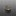
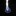

阿前的酒精爐
以下介紹阿前購買的與自製的酒精爐類型，一些DIY的辛酸血淚史(誤。還有其他買過太爛丟掉的，或DIY沒拍照做失敗品就丟了就沒放了。
索引
阿前第一個入手，也是最常帶上山的酒精爐，此款酒精爐燃燒效率高，製作要求也較高，不如買現成的來燒！
中間開口點火即可預熱酒精並快速啟動，透過凹折毛細管壁向小孔噴發，噴發時連帶搶走中心火焰，達到只有小孔噴火的效果。
內層粉紅色是因為一開始是買五金行工業酒精（甲醇）來燒導致染色，甲醇有毒！燒起來燻眼睛！不推薦燒甲醇！


賣場搜尋：輕量化酒精爐、旋風酒精爐、毛細酒精爐，或以圖搜圖找類似的產品。
看 YouTube頻道 Lifestyle C.C Land 入坑，上淘寶買對應的材料包製作。
內層捲上防火棉，讓酒精揮發速率降低，達到延長燃燒時間的效果。
此款酒精爐很方便自製，只要買得到對應的材料的話。


賣場搜尋：小島酒精爐，防火棉酒精爐，或以圖搜圖找類似的產品。
也可以買類似的材料自製，詳情可以看爐心材料測試。
罐頭酒精爐 (墊高可燒異丙醇) #開放式 重量23g DIY
嘗試使用罐頭製作一般的貓罐酒精爐，此款設計可不用爐架，鍋子直接疊上去也可燃燒。非常好DIY的爐子。
沒額外的包覆式爐架，爐體火焰外露較怕風，更需要擋風板。
注意第一次燃燒罐頭外壁的漆被燒掉時要離遠一點，感覺有毒。

後來嘗試使用異丙醇燃燒容易黑鍋，又在網路上查到有款 IsoClean 異丙醇酒精爐可以燒異丙醇的時候極大程度的不黑鍋，但打孔的設計與貓罐酒精爐非常的類似，發現原來只要讓火焰口與鍋底維持1.2cm左右的高度，即可達到類似效果。
具體原理應該是火焰層流穩定，與空氣混合比較佳，所以才可以燃燒較完全（就不容易黑鍋），但燃燒效率稍微降低，燃燒時間更長；好似上方疊超密的鐵網讓火焰通過的時候可以跟空氣更好混和也有類似效果。
IsoClean (後來改名為Multi-Fuel，因為其實也可以燒別的燃料)的製作流程影片：How we make the Multi-Fuel stove by FLAT CAT GEAR
自帶爐架的改良版 重量47g DIY
為了達到IsoClean自帶爐架可燃燒異丙醇減少黑鍋的效果，嘗試綁上螺絲當作爐架，但放置在內外差異非常大！
改良失敗 放置在爐子內，螺絲因受火加熱，間接導致異丙醇加熱沸騰，讓異丙醇蒸氣過度膨脹，反而由進氣孔噴發火焰，空氣沒辦法透過進氣孔進氣維持完全燃燒，導致黃火黑鍋！

改良成功 調整到綁在外圍，終於出現較平穩的藍色火焰，有帶一些部分黃火，但還可以接受，燒完水後鍋子僅有邊緣稍微黑鍋；應該也可以再嘗試縮短螺絲高度。


雪碧330ML酒精爐 #雙層毛細 重量13g DIY
使用雪碧罐製作雙層酒精爐，以側邊壓痕的方式來製作毛細管道外，同時兼當噴火孔，因為不用額外打小洞，製作較容易一些，燃燒效率也還不錯。
爐子熱了之後也可以直接當爐架放上鍋子燒水。
參考YouTube上的製作教學製作而成：〔語音版〕自製鋁罐酒精爐｜調整及修改鋁罐酒精爐〔Vocal version〕DIY a can stove and to adjust to be more efficient
UCC黑咖啡274ML酒精爐 重量15g #雙層加壓 DIY
利用UCC鋁罐錐狀瓶身設計，瓶口直接當成內壁，並且剪切凹折後縫隙可兼當燃燒孔，一兼二顧摸喇阿兼洗褲。
需要兩個UCC罐子，一個當酒精盤，一個尾部打洞當外壁與瓶口當內壁。
初期燃燒效率意外的極好，水很快就滾了，但後期因內層空間太大，殘火延燒很久才熄滅。若要改良應該要嘗試降低爐子高度(但瓶口也要切一下)。

UCC艾洛瑪氣泡咖啡290ML瓶口+小鋁罐酒精爐 重量14g #雙層加壓 DIY
UCC黑咖啡274ML酒精爐的縮小版，這個版本的瓶口材質較堅固，使得縮小版重量沒差很多。爐體是改由類似能量飲料較小的罐體製作。
瓶口較小初期預熱啟動較慢，但啟動後效果不錯。且縮小內層空間後，壓力稍增，且殘火較快結束，驗證了原本的想法。
折翼的長度太短，密封度不佳，導致實際上是由一整圈外圍竄出火焰而非縫隙打孔的區域。但貌似不影響燃燒效果。


UCC黑咖啡184ML雙層酒精爐 #雙層加壓 重量9g DIY
簡易製作的雙層酒精爐。一樣利用兩個鋁罐製作而成，內層爐壁利用鋁罐底凹槽圈的特性卡住隔出雙層空間。
製作上要注意底部擴張要確實，與如果要推到很底，頂部預留的空間最好還是預折/剪一圈，以符合底部弧度（或是底部找全平底罐子製作）。


UCC黑咖啡274ML+烏龍茶320ML酒精爐 #雙層加壓 重量14g DIY
參考YouTube上的教學，可能因為腔體較大，中空管不易加熱酒精，預熱很慢（異丙醇約３分半，乙醇２分鐘），但燃燒起來效果穩定，20ML乙醇可燒開400ML水。
這個爐體作法可以很安全的接合爐體，不太容易歪來歪去壓壞鋁罐，點這裡看教學。


UCC黑咖啡184ML毛細酒精爐 #雙層毛細 重量9g DIY
發現網路購買的手工毛細酒精爐，其實網路上也教過類似做法，就跟著做了：
YouTube: 酒精真的很危險？教你用鋁罐自製安全又好用的酒精爐！【胡思亂搞】
Facebook: 酒精爐簡易版製作
初次測驗空燒異丙醇15ml原本燒了快14分，不過經過密封與彍一下孔洞實際燒起來效果也是很好，變成7分多鐘燒完；搭上爐架使用杯子盛水，燒乙醇15ml花7分鐘燒開400ml的水，而且是大滾(氣溫大蓋是25度)，燒了9分鐘之後才滅。



實際上製作發現用大小一致同一個罐子的狀態下，外圈邊緣跟內圈應該都要密封，酒精蒸氣才能只從洞口噴發燃燒，但手邊只有醜醜的鋁箔膠帶，黏起來也是有點醜醜的。而且燃燒後黏合膠會滲出來，不知道長期有沒有啥影響。
仔細觀察別人可以拿出來賣的東西果然有差，罐體有特別挑選過，密封性很好，凹折的也很美，洞也打得漂亮，還做過很好的打磨。自己亂做的就醜醜的哈。
UCC黑咖啡184ML毛細酒精爐II #雙層毛細 重量8g DIY
跟UCC黑咖啡184ML毛細酒精爐一樣的做法，只不過不用鋁箔膠帶去封那個縫隙了，而是直接將外圍往內折蓋住縫隙。內緣也不特地封起來，燒起來也還可以。
熟能生巧，做得更好看了點，火焰效果也不錯，啟動時間也快，體感約15秒。

改用冰箱內的冰水(大約10度)來測試，25ml乙醇煮500ml的水，9分鐘底部產生許多氣泡，微滾而已沒大滾，約9分半熄滅，還是須注意水溫高低影響沸騰時間的問題。
這次使用直徑約10cm的杯子搭配擋風板，火焰竄很高，把手有點燙手，須小心。

打磨可樂200ML酒精爐 #雙層毛細 重量13g DIY
參考這個教學製作而成：易拉罐螺旋火焰出火增压酒精炉制作教程，把外壁、內毛細管壁、噴焰孔拆成三個部件，打洞與組裝比較方便一些。
不知道改用罐頂當作管壁，上面一圈額外的金屬環結構上有沒有影響，又或者三個部件組裝的中空較多，使得整體更偏向雙層加壓結構，啟動時間比UCC黑咖啡184ML毛細酒精爐II慢了一點（大約30多秒）。
也是大火力類型的爐子，感覺應該要用寬一點的鍋才能完整利用到熱能。


這次特地凹折孔洞形狀讓他有點螺旋感


大小套嵌可樂200ML+UCC黑咖啡184ML酒精爐 #雙層加壓 重量10g DIY
參考這個教學製作而成：【日本露營野營】5分鐘自製酒精爐DIY～又研究出有意思的酒精爐啦！最新結構～這次製造過程超簡單/手殘黨也能做喔🔥Alcohol Camp Stoves#自制酒精爐—（有字幕）。
使用了兩種不同大小的罐子來分別做成內外壁。
原作沒有凹內毛細褶痕，但因為這次製作為了讓內壁可以完美貼合罐底，還是參考了一般毛細酒精爐內壁的作法，其實應該也是可以不用折直接套。
啟動時間也是約30多秒，外環打孔半徑較大，分焰形狀很美，沒特別測試燒水，看起來也是大火力類型，空燒10ml乙醇耗時03:53熄滅。


打磨可樂200ML酒精爐II #雙層毛細 重量15g DIY
打磨可樂200ML酒精爐的第二版，只有12折6孔，組合方法也完全照原始教學易拉罐螺旋火焰出火增压酒精炉制作教程製作，使用三個罐底，但發現罐底對罐底接合其實很容易有縫隙，要注意要壓得非常實，酒精氣化後容易從縫隙中竄出，效果可能會打折。
不過罐體不小心做太高，初次點火熄滅的機率變大。

改成六孔發現其實並不會燒得比較久，其實孔洞的粗細反而影響比較大，第一次打孔較細，空燒10ml乙醇可以燒04:36，但旋轉火焰沒第一版那麼明顯；第二次將孔擴大再凹折更多一些，雖然旋轉火焰更明顯了，但燃燒時間就馬上只剩03:37，感覺跟第一版功能有點重複，有點可惜。
* 小孔徑vs大孔徑